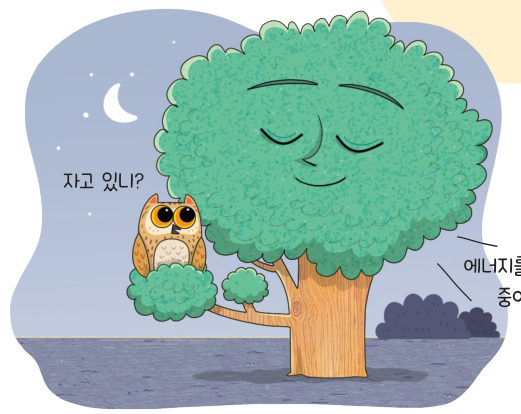
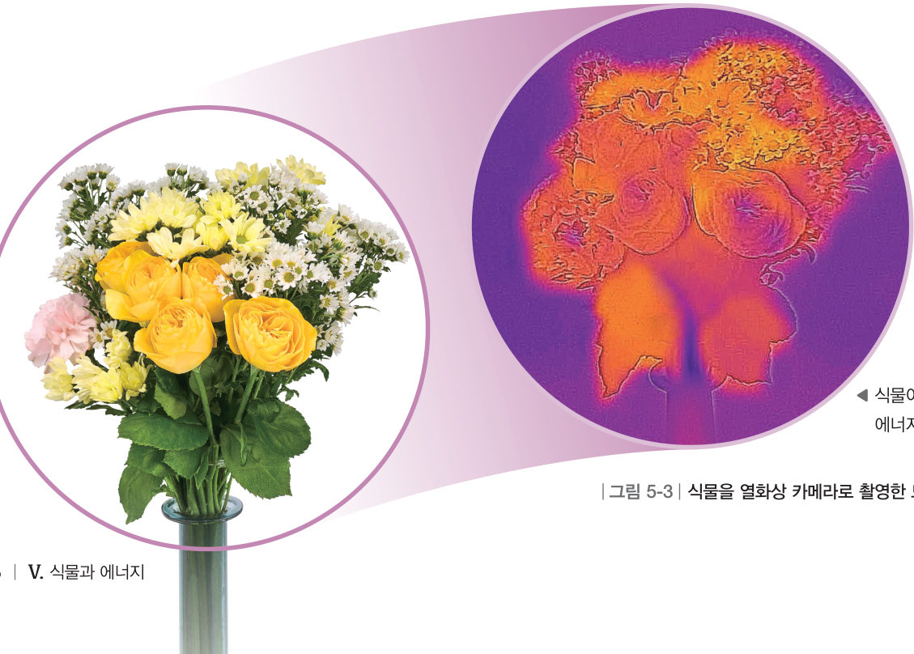
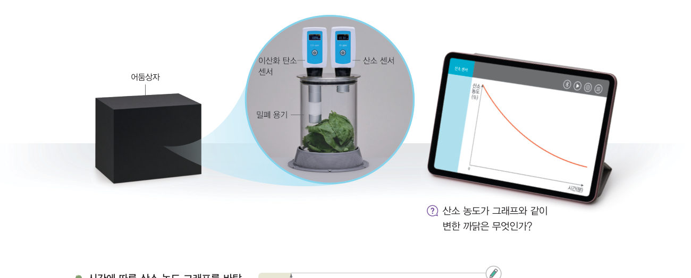
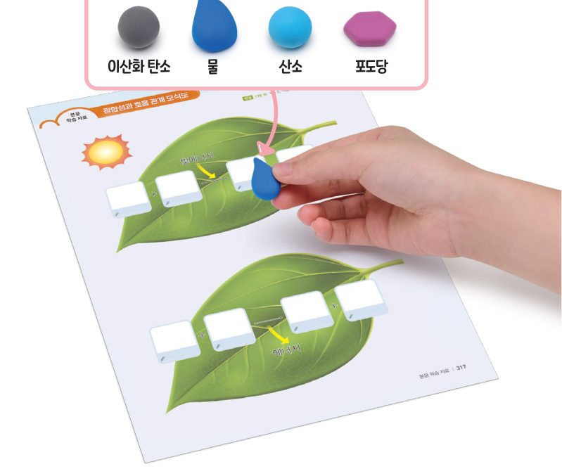
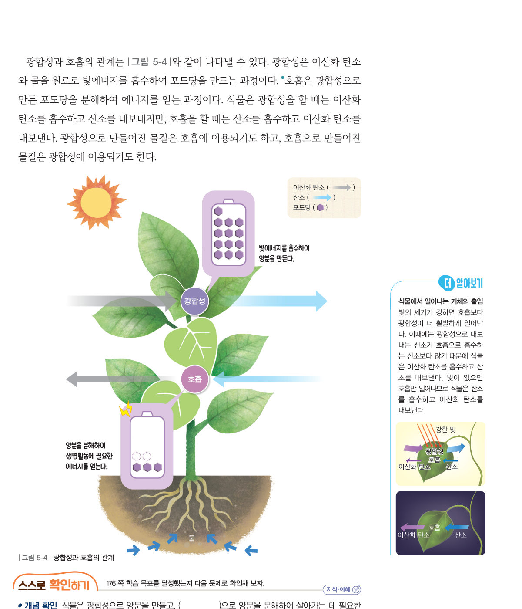

살아있는 교과서 · Ⅴ. 식물과 에너지 · 2. 식물의 호흡과 에너지 · 01 175~179쪽
광합성과
광합성과
호흡의 관계
“자고 있니?” “에너지를 만드는 중이야.” 식물은 살아가는 데 필요한 에너지를 어떻게 얻을까? 어둠상자 속 기체 농도 변화를 예상해 보고, 하루 동안 식물이 내보내고 흡수하는 기체를 관찰해 보자.
🎯 이 단원을 배우면 — 광합성과 호흡의 관계를 설명하고, 광합성과 호흡 과정에서 일어나는 에너지의 출입과 물질의 변화를 분석할 수 있다.
두 번째 블록열매가 맺히기까지 식물은 양분을 어떻게 저장하고 이용할까? 175쪽
“이것 봐. 포도가 많이 맺혔어.” “알이 크고 탱탱한 포도는 새콤달콤하고 정말 맛있을 것 같아.” 이 단원의 힌트 조각을 모으면 식물이 에너지를 얻는 과정과 양분을 저장하고 이용하는 과정을 알아내어 두 번째 블록 질문에 답할 수 있다.
이 단원과 관련해 이미 알고 있는 것에 표시해 보자.
교과서식물은 어떻게 에너지를 얻을까? 176쪽
식물이 싹을 틔우고 열매를 맺는 것과 같은 생명활동을 하려면 에너지가 필요하다. 식물은 광합성으로 만든 양분을 에너지원으로 사용한다. 식물은 세포에서 포도당이 산소와 반응하여 이산화 탄소와 물로 분해되면서 에너지를 얻는다. 이를 호흡이라고 하고, 주로 마이토콘드리아에서 일어난다. 식물은 호흡으로 얻은 에너지를 생명활동에 이용한다.

1호흡 식: 포도당( ) + 산소( ) → 이산화 탄소( ) + 물( ) + 에너지
해 보기 · 자료 변환·비교·분석·해석하기식물의 호흡에서 기체의 출입 알아보기 177쪽

어둠상자 속 밀폐 용기 안의 산소 농도 그래프가 주어졌어요. 이산화 탄소 농도 그래프는 어떤 모양일지 골라 예상한 뒤 [측정 결과 보기]를 눌러 확인해 보자.
1빛이 없을 때 식물 주변에서 산소 농도는 , 이산화 탄소 농도는 . 이는 식물이 호흡으로 산소를 하고 이산화 탄소를 하기 때문이다.
💡 오개념 바로잡기 · 식물의 호흡은 잎에서만 일어날까?
뿌리, 줄기, 잎, 열매를 이루는 살아 있는 모든 세포에서는 양분을 분해하여 생명활동에 필요한 에너지를 만든다. 또 생명활동에는 항상 에너지가 필요하므로 식물의 호흡은 빛이 있을 때나 없을 때나 항상 일어난다.
🧩 두 번째 블록 · 힌트 조각 1 (179쪽)
식물은 ( )(으)로 얻은 에너지를 생명활동에 이용한다.
탐구 · 자료 변환·비교·분석·해석하기광합성과 호흡 과정에서의 에너지 출입과 물질의 변화 분석하기 178~179쪽

1자료 변환 모식도를 분석하여 광합성과 호흡 과정에서 일어나는 물질의 변화와 에너지의 출입을 표에 정리해 보자.
| 구분 | 광합성 | 호흡 |
|---|---|---|
| 필요한 물질 | ||
| 만들어진 물질 | ||
| 에너지 |

하루 동안의 식물낮과 밤의 기체 출입
시각을 바꾸어 보자. 빛이 강한 낮에는 광합성이 호흡보다 활발하고, 밤에는 호흡만 일어나요. 화살표는 식물이 내보내거나 흡수하는 기체예요.
2빛의 세기가 강한 낮에 식물은 이산화 탄소를 하고 산소를 한다. 빛이 없는 밤에는 일어난다.
더 해 보기 · 광합성과 호흡의 관계를 나타내는 노래 만들기
광합성과 호흡 과정의 에너지 출입과 물질의 변화를 표현한 노래 가사를 만들어 보자.
스스로 확인하기176쪽 학습 목표를 달성했는지 확인해 보자 179쪽
1개념 확인 식물은 광합성으로 양분을 만들고, ( )으로 양분을 분해하여 살아가는 데 필요한 에너지를 얻는다.
2사고력 농작물의 씨를 뿌리기 전에 밭을 갈아 흙 속에 공기가 잘 통하게 만드는 까닭을 식물의 호흡과 관련지어 설명해 보자.
5분 테스트광합성과 호흡의 관계
1식물은 세포에서 광합성으로 만들어진 양분이 와 반응하여 이산화 탄소와 물로 분해되면서 에너지를 얻는다. 이 과정을 이라고 한다. 빛이 없을 때 식물 주변에서는 산소 농도가 지고, 이산화 탄소 농도가 진다.
✔옳으면 O, 옳지 않으면 X
| ③ 식물의 호흡은 빛이 있을 때나 없을 때나 항상 일어난다. | |
| ④ 식물의 호흡은 잎에서만 일어난다. | |
| ⑤ 식물은 호흡을 할 때 이산화 탄소가 필요하다. | |
| ⑦ 광합성과 호흡은 모두 양분을 저장하는 과정이다. | |
| ⑧ 광합성은 에너지를 저장하는 과정이고, 호흡은 에너지를 방출하는 과정이다. | |
| ⑨ 광합성은 하루 중 빛이 있는 낮에 일어나고, 호흡은 밤에만 일어난다. | |
| ⑩ 광합성으로 만들어진 물질은 호흡에 이용되기도 하고, 호흡으로 만들어진 물질은 광합성에 이용되기도 한다. |
6광합성에 필요한 물질은 ( A ), 물이고, 호흡에 필요한 물질은 ( B ), 산소이다. A: B:
스스로 정리하기광합성과 호흡의 관계 182쪽
1광합성과 호흡의 관계
⑴ 식물의 : 포도당이 산소와 반응하여 이산화 탄소와 물로 분해되면서 생명활동에 필요한 에너지를 얻는 과정
⑵ 광합성 — 양분 , 빛에너지 흡수 / 호흡 — 양분 분해, 생명활동에 필요한 에너지를 얻음
⑵ 광합성 — 양분 , 빛에너지 흡수 / 호흡 — 양분 분해, 생명활동에 필요한 에너지를 얻음
| 평가 기준 | 스스로 평가 |
|---|---|
| 과정·기능 광합성과 호흡 과정의 에너지 출입과 물질의 변화를 분석했는가? | |
| 가치·태도 모둠 구성원과 협력하며 모형을 창의적으로 표현했는가? |
제출학생 정보 · 제출하기
모든 활동을 마친 뒤 제출하면 전체가 한 번에 채점되고 피드백이 나타나요. 답안은 선생님 스프레드시트(중2 탭)에 기록돼요.